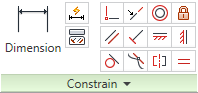

Overview:
AutoDesk Inventor is a widely used and very powerful computer-aided design software suite that shows you pretty pictures of intricate engines and turbines on the load-up screen, then crushes your dreams when you realize the only thing you know how to make is an extruded square.
We will attempt to show you the ropes of getting started with Inventor and clearifying any confusing terminology that the app throws your way. But first, the prerequisits:
Prerequisites:
This tutorial is written assuming you have a functional copy of "AutoDesk Inventor Professional 2011 - Student Edition" operating on a Windows machine. If you find yourself without Inventor, visit the "CAD Programs" heading on the Resources Page to download it.
The Basics:
First let's define some vocabulary:
Sketch: A series of boundaries, points, etc. that designate an origin for a feature, such as an extrusion, hole, or surface. (e.g. drill sites for mounting holes can be marked on a surface using "points" in a sketch.)
Constraint: In a Sketch or Assembly, rules that define the position/orientation of features/parts with respect to other features/parts.
Part: In its simplest form, a single component, perhaps to be integrated into an assembly.
Assembly: A collection of parts with interdependent constraints that define a configuration to make a system. Assemblies may include assemblies to create larger assemblies.
Lessons and Instructional Guides:
Here are a few short guides to get you acquainted with Inventor and its quriks - For the first three lessons, we'll use Inventor to make a tank for Dr. Semak:
Sketches - From 2D Profiles...
Parts - ...to 3D Objects...
Assemblies - ...to Integrated Systems (of destruction)!
Other Stuff - Explore (aka. Dare you to break it!)
Quick Reference Guide - Cheat sheet from the References page
"Sketches"
| Figure 1 |
|---|
| A Hyperwalchoid |
From Sketches, come Parts. The body of a Part is typically made up of a series of extrusions that are created from a Sketch. For example, an extruded rectangle creates a rectangular prism, an extruded circle creates a cylindar, and an extruded Dr. Walch gives a hyperwalchoid (Figure 1).
Before we start our tank, let's have a quick crash-course on "Sketch drawing". First, let's draw a square centered about the origin. After selecting the "rectangle" button click to mark the first vertex of a the rectangle and its diagonal vertex. You may notice that the cursor can stick to the center point, or to dotted lines on the X/Y axes. I want to stress that, regardless of the sketch component, these guides are not consistantly permanent and may not lock your feature to a location (and sometimes it locks it when you don't want it to! Careful!). This isn't a big deal now, but keep in mind my points about "constraints" (Figure 2) as I go over them.
|  |
| Figure 2 |
|---|
| Sketch Constrains Panel |
| Hover over each icon (in Inventor) to preview the constraint's function. |
I want to center this rectangle permanently, without relying on the guides. To do this, I need to mark the center of the rectangle. Make another rectangle off to the side of the first. Now we need to use constraints to make this a construction reference. Highlight the second rectangle and press the construction icon (this indicates that the line is a referece and not a boundary for a Part feature).
| Figure 3 |
|---|
| Centered Rectangle |
Now, using the coincidence constraint , constrain one corner of the first rectangle to a corner of the second. Finally, use the symmetry button to place the sides of the first rectangle symmetrically about the remaining side of the reference rectangle (Figure 3). This mirrors the first two lines you click around the third line that you click (you can also do this for points). To do the vertical lines, hit [escape] and repeat.
*A very important detail that comes with experience is Sketch placement. Taking advantage of the part's origin and axes can be helpful in completing symmetry, for example.